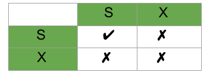

First things first, I hope you are familiar to some of the concepts relating to Transactions.
- What is a Recoverable Schedule?
- What are Cascading Rollbacks and Cascadeless schedules?
- Determining if a schedule is Conflict Serializable.
Now, we all know the four properties a transaction must follow. Yes, you got that right, I mean the ACID properties. Concurrency control techniques are used to ensure that the Isolation (or non-interference) property of concurrently executing transactions is maintained.
A trivial question I would like to pose in front of you, (I know you must know this but still) why do you think that we should have interleaving execution of transactions if it may lead to problems such as Irrecoverable Schedule, Inconsistency and many more threats.
Why not just let it be Serial schedules and we may live peacefully, no complications at all.
Yes, the performance effects the efficiency too much which is not acceptable.
Hence a Database may provide a mechanism that ensures that the schedules are either conflict or view serializable and recoverable (also preferably cascadeless). Testing for a schedule for Serializability after it has executed is obviously too late!
So we need Concurrency Control Protocols that ensures Serializability .
Concurrency-control protocols : allow concurrent schedules, but ensure that the schedules are conflict/view serializable, and are recoverable and maybe even cascadeless.
These protocols do not examine the precedence graph as it is being created, instead a protocol imposes a discipline that avoids non-seralizable schedules.
Different concurrency control protocols provide different advantages between the amount of concurrency they allow and the amount of overhead that they impose.
We’ll be learning some protocols which are important for GATE CS. Questions from this topic is frequently asked and it’s recommended to learn this concept. (At the end of this series of articles I’ll try to list all theoretical aspects of this concept for students to revise quickly and they may find the material in one place.) Now, let’s get going:
Different categories of protocols:
- Lock Based Protocol
- Basic 2-PL
- Conservative 2-PL
- Strict 2-PL
- Rigorous 2-PL
- Graph Based Protocol
- Time-Stamp Ordering Protocol
- Multiple Granularity Protocol
- Multi-version Protocol
For GATE we’ll be focusing on the First three protocols.
Lock Based Protocols –
A lock is a variable associated with a data item that describes a status of data item with respect to possible operation that can be applied to it. They synchronize the access by concurrent transactions to the database items. It is required in this protocol that all the data items must be accessed in a mutually exclusive manner. Let me introduce you to two common locks which are used and some terminology followed in this protocol.
- Shared Lock (S): also known as Read-only lock. As the name suggests it can be shared between transactions because while holding this lock the transaction does not have the permission to update data on the data item. S-lock is requested using lock-S instruction.
- Exclusive Lock (X): Data item can be both read as well as written.This is Exclusive and cannot be held simultaneously on the same data item. X-lock is requested using lock-X instruction.
Lock Compatibility Matrix –

- A transaction may be granted a lock on an item if the requested lock is compatible with locks already held on the item by other
transactions. - Any number of transactions can hold shared locks on an item, but if any transaction holds an exclusive(X) on the item no other transaction may hold any lock on the item.
- If a lock cannot be granted, the requesting transaction is made to wait till all incompatible locks held by other transactions have been released. Then the lock is granted.
Upgrade / Downgrade locks : A transaction that holds a lock on an item A is allowed under certain condition to change the lock state from one state to another.
Upgrade: A S(A) can be upgraded to X(A) if Ti is the only transaction holding the S-lock on element A.
Downgrade: We may downgrade X(A) to S(A) when we feel that we no longer want to write on data-item A. As we were holding X-lock on A, we need not check any conditions.
So, by now we are introduced with the types of locks and how to apply them. But wait, just by applying locks if our problems could’ve been avoided then life would’ve been so simple! If you have done Process Synchronization under OS you must be familiar with one consistent problem, starvation and Deadlock! We’ll be discussing them shortly, but just so you know we have to apply Locks but they must follow a set of protocols to avoid such undesirable problems. Shortly we’ll use 2-Phase Locking (2-PL) which will use the concept of Locks to avoid deadlock. So, applying simple locking, we may not always produce Serializable results, it may lead to Deadlock Inconsistency.
Problem With Simple Locking…
Consider the Partial Schedule:
| T1 | T2 | |
|---|---|---|
| 1 | lock-X(B) | |
| 2 | read(B) | |
| 3 | B:=B-50 | |
| 4 | write(B) | |
| 5 | lock-S(A) | |
| 6 | read(A) | |
| 7 | lock-S(B) | |
| 8 | lock-X(A) | |
| 9 | …… | …… |
Deadlock – consider the above execution phase. Now, T1 holds an Exclusive lock over B, and T2 holds a Shared lock over A. Consider Statement 7, T1 requests for lock on B, while in Statement 8 T2 requests lock on A. This as you may notice imposes a Deadlock as none can proceed with their execution.
Starvation – is also possible if concurrency control manager is badly designed. For example: A transaction may be waiting for an X-lock on an item, while a sequence of other transactions request and are granted an S-lock on the same item. This may be avoided if the concurrency control manager is properly designed.
Phew… I hope you are now familiar with why we should study Concurrency Control Protocols. Moreover, you should be familiar with basics of Lock Based Protocols and problems with Simple Locking.
Next we’ll discuss 2-PL and its categories, implementation along with the advantages and pitfalls of using them. Questions on Lock based protocols are common in GATE, also we’ll further discuss about Graph based, Timestamp and some fun questions on Thomas Write Rule. Till then, happy learning.